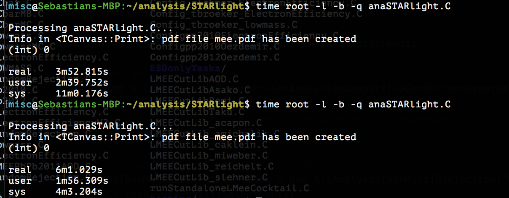

TDataFrame
ROOT's TDataFrame offers a high level interface for analyses of data stored in TTrees*.
In addition, multi-threading and other low-level optimisations allow users to exploit all the resources available on their machines completely transparently. Skip to the class reference or keep reading for the user guide.
In a nutshell:
ROOT::Experimental::TDataFrame d("myTree", file); // Interface to TTree and TChain
auto myHisto = d.Histo1D("Branch_A"); // This happens in parallel!
myHisto->Draw();
Depending on the ROOT6 version:
ROOT::RDataFrame d("myTree", file); // Interface to TTree and TChain
auto myHisto = d.Histo1D("Branch_A"); // This happens in parallel!
myHisto->Draw();
Calculations are expressed in terms of a type-safe functional chain of actions and transformations, TDataFrame takes care of their execution. The implementation automatically puts in place several low level optimisations such as multi-thread parallelisation and caching.
Introduction
A pipeline of operations is described to be performed on the data, the framework takes care of the management of the loop over entries as well as low-level details such as I/O and parallelisation. TDataFrame provides an interface to perform most common operations required by ROOT analyses; at the same time, the users are not limited to those common operations: building blocks to trigger custom calculations are available too.
TDataFrame is built with a modular and flexible workflow in mind, summarised as follows:
build a data-frame object by specifying your data-set
apply a series of transformations to your data
- filter (e.g. apply some cuts) or
- create a temporary column (e.g. the result of an expensive computation on branches, or an alias for a branch)
- apply actions to the transformed data to produce results (e.g. fill a histogram)
TTreeReader
TTreeReader reader("myTree", file);
TTreeReaderValue<A_t> a(reader, "A");
TTreeReaderValue<B_t> b(reader, "B");
TTreeReaderValue<C_t> c(reader, "C");
while(reader.Next()) {
if(IsGoodEvent(a, b, c))
DoStuff(a, b, c);
}
ROOT::Experimental::TDataFrame
ROOT::Experimental::TDataFrame d("myTree", file, {"A", "B", "C"});
d.Filter(IsGoodEvent).Foreach(DoStuff);
TTree::Draw
TTree *t = static_cast<TTree*>(
file->Get("myTree")
);
t->Draw("var", "var > 2");
ROOT::Experimental::TDataFrame
ROOT::Experimental::TDataFrame d("myTree", file, "var");
d.Filter([](int v) { return v > 2; }).Histo1D();
Keep reading to follow a five-minute crash course to TDataFrame, or jump to an overview of useful features, or a more in-depth explanation of transformations, actions and parallelism.
Crash course
Filling a histogram
Let's start with a very common task: filling a histogram
// Fill a TH1F with the "MET" branch
ROOT::Experimental::TDataFrame d("myTree", filePtr); // build a TDataFrame like you would build a TTreeReader
auto h = d.Histo1D("MET");
h->Draw();
The first line creates a TDataFrame associated to the TTree "myTree". This tree has a branch named "MET".
Histo1D is an action; it returns a smart pointer (a TResultProxy to be precise) to a TH1F histogram filled with the MET of all events. If the quantity stored in the branch is a collection, the histogram is filled with its elements.
There are many other possible actions, and all their results are wrapped in smart pointers; we'll see why in a minute.
Applying a filter
Let's now pretend we want to cut over the value of branch "MET" and count how many events pass this cut:
// Select events with "MET" greater than 4., count events that passed the selection
auto metCut = [](double x) { return x > 4.; }; // a c++11 lambda function checking "x > 4"
ROOT::Experimental::TDataFrame d("myTree", filePtr);
auto c = d.Filter(metCut, {"MET"}).Count();
std::cout << *c << std::endl;
Filter takes a function (a lambda in this example, but it can be any kind of function or even a functor class) and a list of branch names. The filter function is applied to the specified branches for each event; it is required to return a bool which signals whether the event passes the filter (true) or not (false). You can think of your data as "flowing" through the chain of calls, being transformed, filtered and finally used to perform actions. Multiple Filter calls can be chained one after another. It is possible to specify filters as strings too. This snippet is analogous to the one above:
ROOT::Experimental::TDataFrame d("myTree", filePtr);
auto c = d.Filter("MET > 4.").Count();
std::cout << \*c << std::endl;
Here the names of the branches used in the expression and their types are inferred automatically. The string must be standard C++ and is just-in-time compiled by the ROOT interpreter, Cling.
Running on a range of entries
It is sometimes necessary to limit the processing of the dataset to a range of entries. For this reason, the TDataFrame offers the concept of ranges as a node of the TDataFrame graph: this means that filters, columns and actions can be hung to it. If a range is specified after a filter, the range will act exclusively on the entries surviving the filter. Here you can find some code using ranges:
ROOT::Experimental::TDataFrame d("myTree", filePtr);
// This is how you can express a range of the first 30 entries
auto d_0_30 = d.Range(0, 30);
// This is how you pick all entries from 15 onwards
auto d_15_end = d.Range(15, 0);
// We can use a stride too, in this case we pick an event every 3
auto d_15_end_3 = d.Range(15, 0, 3);
Ranges are not available when multi-threading is enabled.
Creating a temporary column
Let's now consider the case in which "myTree" contains two quantities "x" and "y", but our analysis relies on a derived quantity z = sqrt(xx + yy). Using the Define transformation, we can create a new column in the data-set containing the variable "z":
auto sqrtSum = [](double x, double y) { return sqrt(x*x + y*y); };
auto zCut = [](double z) { return z > 0.; }
ROOT::Experimental::TDataFrame d(treeName, filePtr);
auto zMean = d.Define("z", sqrtSum, {"x","y"})
.Filter(zCut, {"z"})
.Mean("z");
std::cout << \*zMean << std::endl;
Define creates the variable "z" by applying sqrtSum to "x" and "y". Later in the chain of calls we refer to variables created with Define as if they were actual tree branches, but they are evaluated on the fly, once per event. As with filters, Define calls can be chained with other transformations to create multiple temporary columns. As with filters, it is possible to specify new columns as strings too. This snippet is analogous to the one above:
ROOT::Experimental::TDataFrame d(treeName, filePtr);
auto zMean = d.Define("z", "sqrt(x*x + y*y)")
.Filter("z > 0.")
.Mean("z");
std::cout << \*zMean << std::endl;
Again the names of the branches used in the expression and their types are inferred automatically. The string must be standard C++ and is just-in-time compiled by the ROOT interpreter, Cling.
Executing multiple actions
As a final example let us apply two different cuts on branch "MET" and fill two different histograms with the "pt_v" of the filtered events. You should be able to easily understand what's happening:
// fill two histograms with the results of two opposite cuts
auto isBig = [](double x) { return x > 10.; };
ROOT::Experimental::TDataFrame d(treeName, filePtr);
auto h1 = d.Filter(isBig, {"MET"}).Histo1D("pt_v");
auto h2 = d.Histo1D("pt_v");
h1->Draw(); // event loop is run once here
h2->Draw("SAME"); // no need to run the event loop again
TDataFrame executes all above actions by running the event-loop only once. The trick is that actions are not executed at the moment they are called, but they are lazy, i.e. delayed until the moment one of their results is accessed through the smart pointer. At that time, the even loop is triggered and all results are produced simultaneously.
It is therefore good practice to declare all your filters and actions before accessing their results, allowing TDataFrame to loop once and produce all results in one go.
Going parallel
Let's say we would like to run the previous examples in parallel on several cores, dividing events fairly between cores. The only modification required to the snippets would be the addition of this line before constructing the main data-frame object:
ROOT::EnableImplicitMT();

Simple as that, enjoy your speed-up. Or a crash...
Demo on TDF and CSV
Exercise
Now it's your turn. Use an existing macro you have to perfom analysis on a tree and write one that does the same but uses the TDataFrame.
Or look for a csv file online and play around with this. Or use the tree maker macro by Redmer in the section on parllelism.
Have fun!